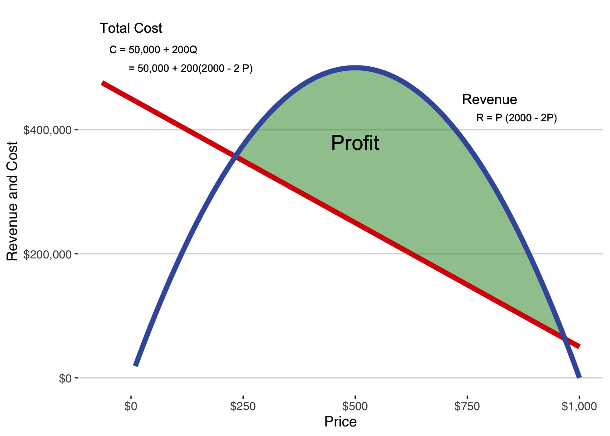
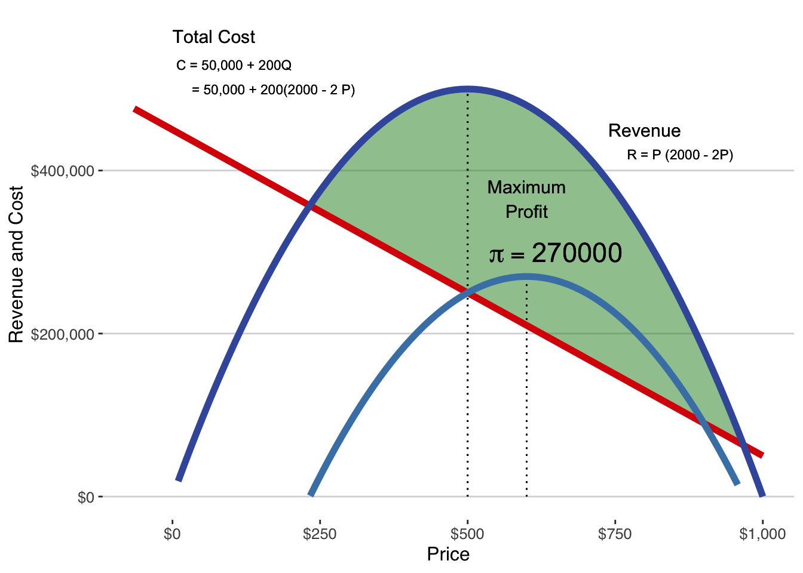
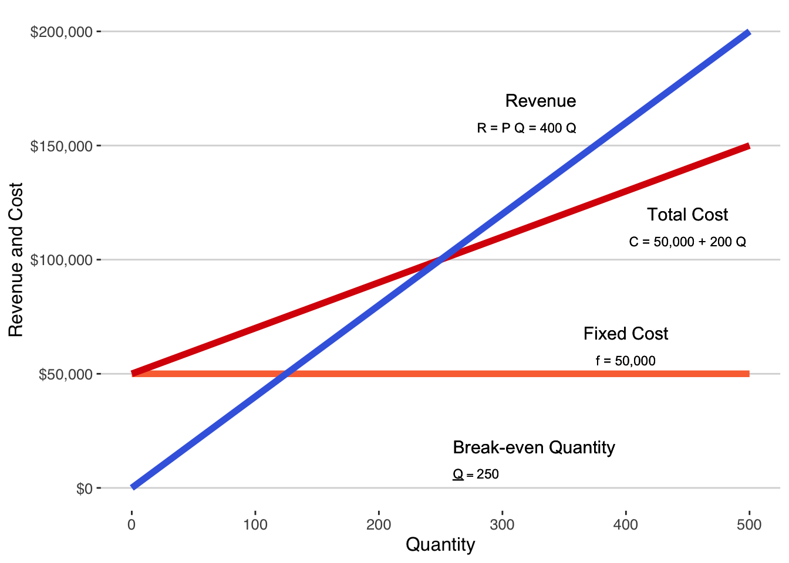

Entrepreneurship is, at its essence, an economic activity and profitability is the cornerstone of entrepreneurial success. Profitability is not just a financial metric, but a comprehensive indicator of your startup’s health, sustainability, and potential for growth.
Profitability represents the ability of a business to generate more revenue than it spends in costs. It’s the lifeblood of any venture, determining its viability and long-term success. For entrepreneurs, profitability is not merely a goal; it’s a vital sign of their startup’s effectiveness in creating value and its efficiency in managing resources.
13.1 Why Profitability Matters
For startups, the path to profitability is often challenging yet imperative. It’s a clear indicator to investors and stakeholders of your business’s potential. Profitability demonstrates that your startup is not just an idea but a functional entity capable of sustaining itself and scaling. It reassures that the business model is sound, the market demand is adequately met, and the operational efficiencies are in place.
This chapter stands at the confluence of the preceding discussions on demand, revenue, and cost. Here, we weave these elements together to provide you with a comprehensive understanding of how to calculate and evaluate your startup’s profitability. We will delve into the analytics of profitability, using data-driven insights to make informed decisions.
You’ve learned about demand curves, understood revenue streams, and dissected cost structures. Now, it’s time to integrate these concepts. We’ll start with the maximization of profit - identifying the optimal balance between revenue generation and cost management. This section will not only discuss the theoretical aspects but also demonstrate practical analytical methods to derive these insights.
Following this, we will explore how to utilize the optimal pricing strategy, gleaned from profit maximization, to conduct a thorough break-even analysis. This analysis is crucial in understanding at what point your startup stops operating at a loss and starts generating profits.
Remember, profitability is more than a number; it’s a testament to your startup’s ability to thrive in a competitive landscape. Through this chapter, you will gain the analytical acumen to not just dream of profitability but to strategically plan for it, measure it, and achieve it.
13.2 Rescaling Is Required to Calculate Profit
The basic profit equation is
\[ \mathsf{\pi = PQ - cQ -f} \] meaning that to calculate profit we need to know price, quantity, variable unit cost, and fixed cost. Price is something you set in your optimization. Quantity is determined by customers’ demand given the choice of price. Variable unit cost \(\mathsf{c}\) and fixed cost \(\mathsf{f}\) are determined by the cost structure chosen to produce the product or service you offer for sale. In short, the earlier chapters in demand, revenue and cost formed the building blocks we need to calculate profit.
But there’s a catch: revenue (driven by demand) and cost data often don’t align. Typically, demand data comes from a small sample of customers, while cost data reflects the entire market. Imagine trying to cover the costs of a nationwide campaign with just a local fundraiser’s revenue - it doesn’t add up.
The Solution: Rescaling
To resolve this, we either scale up demand to match market size or scale down fixed costs to the sample size.
Scaling up demand: Multiply your sample-based demand by a factor that represents the market size.
Scaling down fixed cost: Adjust the market-level fixed costs to reflect the proportion attributed to your sample size.
Scaling Up Demand
Let’s say our sample demand curve from 100 respondents is:
\[ \mathsf{Q_{sample} = 327 - 2.19 \ P.} \] With a market of 1,000,000,000 potential customers, our sample is just a tiny fraction. To scale up, multiply by the scaling factor \(\mathsf{m = \frac{Population}{Sample} = 10000}\).
Through rescaling, we align our demand data with our cost data, enabling an accurate and realistic profitability analysis. It’s a crucial step in ensuring your entrepreneurial decisions are data-driven and grounded in financial reality.
13.3 Maximize Profit
In the journey toward understanding profitability, we’ve navigated through the intricacies of demand curves, revenue models, and cost structures. Now, we arrive at the pivotal concept of maximizing profit, a critical goal for any entrepreneur. The essence of profitability lies not just in generating revenue but in outpacing costs, a balance heavily influenced by market competition.
Monopoly Profits and Market Choice
As an entrepreneur, the choice of market and problem-solving approach significantly impacts your profitability potential. Ideally, operating as a monopolist, where you’re the sole provider of a unique solution, offers the highest profit margin. However, true monopolies are rare. They represent the upper bound of profitability you can expect to earn, serving as a benchmark for assessing performance in more competitive contexts.
Monopoly Characteristics:
Single Firm Dominance: A market with one powerful firm.
Complete Product Differentiation: No rival products, ensuring complete market control.
Strong Entry Barriers: Prevent potential competitors from entering the market.
Powerless Customers: Large customer base with limited individual influence on price.
Perfect Information: Complete awareness of prices and availability among buyers and sellers.
In monopoly settings, profit (denoted \(\mathsf{\pi}\)) is the difference between revenue (\(\mathsf{R}\)) and cost (\(\mathsf{C}\)) with the profit equation \(\mathsf{ \pi = R - C}\). To illustrate, consider the demand, revenue, and cost functions from earlier chapters:
These core elements of the profit function yield a final profit function of \[ \mathsf{\pi = 1600 P - 2P^2 - 450,\!000.} \] as depicted in Figure 13.1.

Figure 13.1: Profit as the difference between revenue and cost.
Maximizing Profit through Optimal Pricing
The crux of profit maximization lies in setting the right price. The optimal price is the one that marks the greatest distance between revenue and cost. This is illustrated in Figure 13.2.
Revenue Maximizing Price: At first glance, it might seem logical to aim for the price that maximizes revenue. For example, our analysis shows that at a price of $500, the revenue hits its peak. However, this doesn’t translate to maximum profit. Despite generating a profit of $250,000 at this price, a closer look at Figure 13.2 reveals that we’re not optimizing our profit potential here.
Profit Maximizing Price: Diving deeper, we discover that the key to maximizing profit lies not in the revenue peak but at a different price point. By adjusting the price to $600, we find the sweet spot where profit is maximized at $270,000. This is a crucial insight for entrepreneurs: the price that maximizes revenue is not the one that maximizes profit.
In short, the goal is always to find the profit maximizing price. While it might be tempting to chase the highest revenue, it’s the profit that ultimately sustains and grows your business.1

Figure 13.2: Profit earned at the revenue maximizing price.
Beyond Monopoly: Preparing for Competitive Markets
While our analysis so far assumes a monopolistic setting, most startups eventually face competition. The upcoming chapters delve into oligopoly and game theory, crucial for understanding competitive dynamics. This understanding will further refine our analysis of profitability, accounting for competitor interactions and market responses.
13.4 Break-even Analysis
A critical task for you as an entrepreneur is to ensure your selling price per unit surpasses your cost per unit. This sounds simple, but it’s nuanced. If your venture has no fixed costs, just ensure your price is above your average variable cost. However, most businesses do face fixed costs, meaning your total revenue over a period must exceed all your costs, including these fixed expenses. Remember, covering fixed costs can take time, and your venture needs sufficient revenue growth to meet these expenses.
Break-even analysis helps you determine the break-even quantity - the volume of sales needed to cover all costs without making a profit. Before you reach break-even, you are operating at a loss that you must cover with debt or investor money. After you reach break-even, you can begin paying back the losses you incurred before reaching break-even. Without large amounts of outside funding, it may be necessary to invest in a different cost structure that is more favorable in the short-run even if it leads to higher costs in the long run. If this condition seems unreachable, it’s a red flag for your business model.
Calculating Break-Even Quantity
The key to break-even analysis is to determine how many units you must sell to cover your fixed costs in additions to your variable costs. To find this quantity, set your profit function (revenue minus costs) to zero, assuming you know your profit-maximizing price \(\mathsf{P^*}\) . The break-even quantity, denoted as \(\mathsf{\underline{Q}}\), is then calculated by dividing your fixed costs by the margin (price minus variable cost). The equation is:
which is, in words, the fixed cost divided by the margin.
Applying Break-Even Analysis: A Practical Example
Imagine you estimated a demand curve from a sample of potential customers:
\[ \mathsf{q = 12 - 0.02 \ p.} \]
Scaling this demand curve up to your target market size is essential. Let’s say your potential market is 250,000 customers, scaled up from the 50 in your sample. Your adjusted demand curve becomes:
This combination of demand and cost curves leads to a profit-maximizing price of \(\mathsf{P^* = \$400}\) and maximized profit at that price is \(\mathsf{\pi = \$3,\!950,\!000}\). With the demand curve, cost curve, and profit maximizing price, break-even quantity is a simple calculation.
Before this startup is able to reliably sell 250 units, it is operating at a loss. Every unit of quantity above 250 generates positive profit.
The relationship between revenue, cost, and break-even quantity is illustrated in Figure 13.3.
### Break even quantityf <-50000c <-200fTC <-function(Q) f + c*QfF <-function(Q) f Pstar <-400fR <-function(Q) Pstar * Q rev_bounds <-tibble(x =c(0, 500)) # Create tibble containing plot range for x-axis (P)eqn1 <-" R = P Q = 400 Q"eqn2 <-" C = 50,000 + 200 Q "eqn3 <-" underline(Q) == 250 "eqn4 <-" f = 50,000 "ggplot(rev_bounds, aes(x)) +# Draw ggplot2 plot##geom_function(fun = fF, color ="#FA7240", linewidth =2) +geom_function(fun = fTC, color ="#DA0406", linewidth =2) +geom_function(fun = fR, color ="RoyalBlue", linewidth =2) +labs(#title = "Revenue for a ticket to a dollar theater",x ="Quantity",y ="Revenue and Cost") +#geom_text(x=360, y=170000, label="Revenue", hjust =1, size =4, parse=F) +geom_text(x=360, y=158000, label=eqn1, hjust =1, size =3, parse=F) +#geom_text(x=450, y=120000, label="Total Cost", hjust =0.5, size =4, parse=F) +geom_text(x=450, y=108000, label=eqn2, hjust =0.5, size =3, parse=F) +#geom_text(x=260, y=18000, label="Break-even Quantity", hjust =0, size =4, parse=F) +geom_text(x=260, y=6000, label=eqn3, hjust =0, size =3, parse=TRUE) +#geom_text(x=400, y=68000, label="Fixed Cost", hjust =0.5, size =4, parse=F) +geom_text(x=400, y=56000, label=eqn4, hjust =0.5, size =3, parse=F) +##scale_x_continuous(labels=scales::dollar_format()) + scale_y_continuous(lim =c(-0,200000), labels=scales::dollar_format()) +theme_hc() +# base size = 12, font family = sans, ... # scale_color_brewer(palette="GnBu", direction=-1) +theme(legend.justification=c(0, 1), legend.position=c(1.8, 1)) # hides legend outside the frame

Figure 13.3: Break-even quantity where revenue equals cost and positive profits begin
Break-even Quantity and Time Determine Your Funding Needs
The relationship between revenue, cost, and break-even quantity, illustrated in Figure 13.3 tells you the scale needed for profitability. However, it doesn’t indicate the time required to reach this scale, which depends on sales growth. Depending on demand, you may expect to sell 250 units every hour or it may take more than a year to sell that many units.
You should estimate how long you think it will take for your sales to reach the break-even quantity based on your demand curve and your early growth rate. That estimate will guide you in how much money you will need from outside sources for your venture to reach profitability. Estimate how much time it’ll take for your sales to reach the break-even quantity. This will guide your funding needs to sustain the venture until it becomes profitable.
Understanding the Impact of Cost Structure
Break-even analysis isn’t just a mathematical exercise; it’s a strategic tool. It guides your decisions on cost structures and underscores the importance of understanding your market and sales potential. Different cost structures lead to different break-even points and, by extension, different funding requirements. This is detailed in Table 13.1. Observe how changes in fixed and variable costs influence the break-even quantity, shaping your strategic decisions.
Table 13.1: Impact of changing cost structure on break-even quantity
Case Study: Launching a No-Frills Car Brand
The Modern Automobile: A Technology Showcase
In today’s world, cars are not just about transportation; they’re marvels of technology. Imagine the latest models with their array of features: airbags, anti-lock brakes, anti-theft systems, and a suite of automated systems like GPS, on-board WIFI, and self-driving capabilities. Initially, these features are exclusive to luxury cars due to their high development costs. But as technology evolves, even entry-level cars start boasting these sophisticated systems. By 2016, electronics constitute a third of a car’s cost, a significant price bump passed on to consumers. For tech enthusiasts, this is a bargain; for those seeking basic transportation, it’s a steep price to pay.
The Market Gap: Simplicity in Complexity
Amidst this tech escalation, there’s a gap: what about consumers who want simple, affordable cars? This overlooked segment could represent a unique entrepreneurial opportunity. What if you could start a company focused on building basic, low-tech cars? Let’s dive into the financial feasibility of this idea.
The Cost of Car-Making
Developing a new car platform is a costly affair, typically ranging from $700 million to $2 billion. Our approach, eschewing expensive tech, might reduce these costs. Let’s estimate a development cost of $500 million, allocated to design, engineering, and factory retooling. The big automakers average a $2500 profit per car, but for smaller, simpler cars, this margin might shrink to $2000. To break even, you’d need to sell a quarter of a million cars - a daunting target.
Reality Check: The Sales Challenge
In 2015, the U.S. car market saw record-breaking sales of 1.7 million cars. But how realistic is our target of 250,000 cars? Comparing with smaller, established brands like Buick, Acura, or Land Rover offers perspective. These brands sold hundreds of thousands of cars annually, but a new brand like ours would likely start much smaller. Tesla, a relatively new entrant, sold only 22,800 cars in 2015. At that rate, it would take over a decade to recover the development costs.
The High Stakes of High Fixed Costs
The auto industry’s high fixed-cost structure presents a formidable barrier to new entrants, especially at the low-end market. Tesla’s success comes from catering to an affluent customer base, offering high-tech cars at premium prices. Our proposed venture sits at the opposite end: targeting cost-conscious consumers with simpler, cheaper vehicles. The challenge is immense: attract enough buyers willing to trade tech for savings and achieve the massive sales volume needed to cover the fixed costs.
The Verdict: A Tough Road Ahead
In conclusion, breaking into the auto industry at the low end poses significant risks. The sheer volume of sales needed to cover fixed costs is daunting, and the competitive landscape is unforgiving. Any entrepreneur eyeing this opportunity must carefully weigh these factors against the potential of tapping into an underserved market.
13.5 Workout Problems
Dorsal Packs
A group of entrepreneurs, concerned about pick-pocketing in tourist destinations, created the Dorsal travel pack. This stylish, modern backpack has zippers facing inward, toward the back of the wearer, for security. For added security, it is made of slash-resistant fabric in nondescript colors to avoid the attention that more colorful, fashion-oriented brands draw.
The team validated the problem and solution, refined the concept, and confirmed direct sales through their website. They conducted a profitability analysis with 107 potential customers, who rated the innovation, suggested improvements, stated their maximum willingness to pay, and provided travel and demographic information.
Dorsal Pack data
Initially, the team reached out to members of their social networks and invited those who had recently traveled or were planning to travel in the near future to help. They were able to get 112 responses from potential customers who had traveled or were about to travel.
Demand and Revenue
The respondents were shown the backpack and its features. They were asked to rate the innovation and offer suggestions to improve it. They were also asked “What is the most you would be willing to pay for the Dorsal travel pack?” Finally, they provided information about their travel patterns as well as demographics. Because the travel pack is a durable good for most travelers, they focused on the of willingness to pay from respondents who had traveled or were planning to travel soon. We see the following responses:
Dorsal plans to have the pack manufactured by a contract manufacturer who charges $40 per backpack to be manufactured, packaged, and delivered to the startup’s offices. The startup is also spending $200 per month for web hosting and $5500 per month for contracted web development. Their total cost curve is linear: \(\mathsf{C = cQ + f}\) where \(\mathsf{c}\) is the variable cost per unit and \(\mathsf{f}\) is fixed cost per month.
Rescaling
To conduct profitability analytics, it’s crucial to align the scale of sample demand with the fixed costs required to serve the market. For this analysis, we will rescale the demand up to the market level. Concerning market size:
International Travelers from the U.S.: According to the U.S. National Travel and Tourism Office, approximately 93 million international trips were made by U.S. citizens in 2019. We focus on 2019 data because international travel dynamics significantly changed due to the COVID-19 pandemic, and recent recovery data is not yet fully available.
We estimate that the average international traveler makes about 1.5 trips per year, accounting for both frequent travelers and those who rarely travel abroad.
It is generally estimated that 70 to 80 percent of these trips are for leisure purposes.
Combining these factors, we assume there were approximately 43.4 million unique international travelers in 2019.
Percentage of Young Travelers Likely to Use a Backpack: While detailed data is unavailable, a conservative estimate suggests that 25% of these travelers are in the 20-39 age group, a demographic typically more active in international travel. This estimation brings our target population down to 10.85 million.
Interest in Security: Estimating the proportion interested in security-enhanced travel gear is challenging. However, considering increased travel safety awareness, we assume that around 20% of the travelers in this age group might be interested in a more secure backpack. This further narrows our target population to approximately 2.17 million.
Market share in a crowded backpack market: Recognizing the diverse needs and preferences of travelers, as well as the crowded nature of the backpack market, achieving a 1-5% market share would be substantial. Opting for a midpoint estimate of 3%, we approximate the target market to be around 65,100 potential customers.
In summary, our assumption for the target market is about 65,100 potential travelers, and the Dorsal team has sampled data from 112 individuals within this segment for their analysis.
Questions
What is the rescaling factor \(\mathsf{m}\) based on the calculation of the target population?
How many backpacks would you expect to sell to the sample of 107 respondents at a price of $110?
How many backpacks would you expect to sell to the complete market at a price of $110?
What is the fixed cost?
What is the unit variable cost?
What is the profit maximizing price for a Dorsal pack? Use the rescaled market demand curve for your calculation and continue to use the market demand for the rest of the questions.
What is the quantity of travel packs sold at the profit maximizing price?
What is the revenue earned by selling Dorsal packs at the profit maximizing price?
What is the profit earned by selling Dorsal packs at the profit maximizing price?
What is the difference between the profit maximizing price and the revenue maximizing price for Dorsal packs? Specifically calculate this as \(\mathsf{P^*_{\pi_{max}} - P^*_{R_{max}}}\).
What is the difference between the revenue when charging the profit maximizing price and the revenue when charging the revenue maximizing price for Dorsal packs? Specifically, calculate this as \(\mathsf{R^*_{\pi_{max}} - R^*_{R_{max}}}\).
What is the difference between the profit when charging the profit maximizing price and the profit when charging the revenue maximizing price for Dorsal packs. Specifically, calculate this as \(\mathsf{\pi^*_{\pi_{max}} - \pi^*_{R_{max}}}\).
Should the Dorsal pack team charge the profit maximizing price or the revenue maximizing price? Choose the best price and un-comment it.
best_price <- “They should charge the profit maximizing price.”
best_price <- “They should charge the revenue maximizing price.”
The Dorsal pack team is seeking funding from investors and wants to be able to communicate how long it will need investor funding to reach profitability. What is the breakeven quantity for the Dorsal pack? Hint: You can calculate this two different ways:
The simple formula in the reading;
Create a profit function as a function of quantity and find its root.
Note: In certain scenarios, like software products with zero variable unit cost, maximizing revenue might coincide with maximizing profit. However, this changes if there are costs associated with customer acquisition. In situations where stakeholders prioritize revenue growth, it’s still prudent to highlight the importance of profit maximization. After all, a business thrives on profit, not just on revenue.↩︎